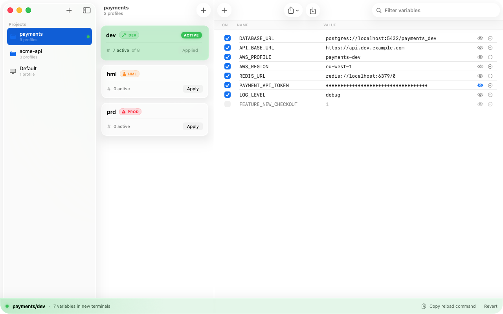

Profiles per project
A profile for each project and each environment, so dev, staging and production stop sharing one file and one accident.
macOS · Open source, MIT
Your environment, in the right place.
Environment variables organised per project and per environment. Switch the whole set in one click — and put the previous values back when the switch turns out to have been a bad idea.
Published · 1.0.1 on GitHub, MIT

A closer look
A profile for each project and each environment, so dev, staging and production stop sharing one file and one accident.
Production is marked as production. The app knows which switch deserves a second look before it happens.
Applying records what was there before. When the switch was wrong, the previous values come back without you reconstructing them from memory.
Shipped inside the app, on the same core, store and journal. One engine, one writer in ~/.zprofile — not two tools disagreeing.
A plugin and an extension with the same five flows as the app: create a project, create a profile, create and edit variables, apply, undo.
MIT, with signed releases, a Homebrew cask and six verification suites running in CI.
Install
Homebrew if you have it, the disk image if you do not. It verifies the published checksum, never uses sudo, and you can read it before you run it.
curl -fsSL https://hyperenv.falcaosl.com/install.sh | bashRead the script first — it is forty lines, and running something piped into a shell without looking is a bad habit this project does not want to encourage.
Where it stands
The public release is on GitHub under MIT, the CI signs it, and the site installs it with one command. The honest gap is distribution.
What is left is not code: a stable Homebrew Cask distribution and a first batch of external users. The app is finished and almost nobody knows it exists.